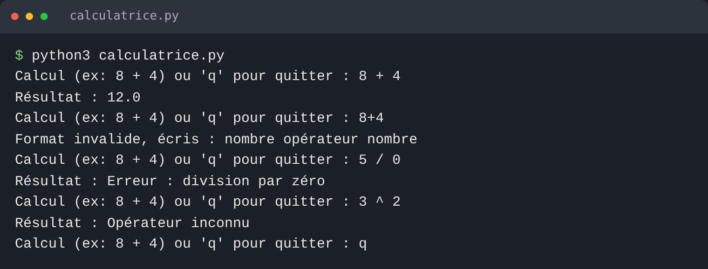
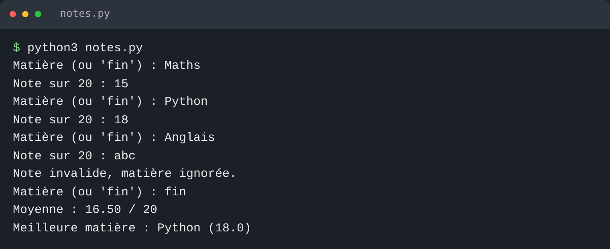

Python : 3 mini-projets
Projet 1 : Calculatrice
Problème
Calculer une opération saisie sous la forme « 8 + 4 », sans planter sur une division par zéro.
Code source
def calculer(a, op, b):
if op == "+": return a + b
if op == "-": return a - b
if op == "*": return a * b
if op == "/":
if b == 0:
return "Erreur : division par zéro"
return a / b
return "Opérateur inconnu"
while True:
ligne = input("Calcul (ex: 8 + 4) ou 'q' pour quitter : ")
if ligne == "q":
break
try:
a, op, b = ligne.split()
print("Résultat :", calculer(float(a), op, float(b)))
except ValueError:
print("Format invalide, écris : nombre opérateur nombre")
Fonctionnement
La fonction calculer choisit l'opération avec des if. La boucle while True lit une ligne, la découpe avec split() et convertit les nombres en float. Un try/except gère les formats invalides.
Exécution (sortie réelle du programme)
Calcul (ex: 8 + 4) ou 'q' pour quitter : Résultat : 12.0
Calcul (ex: 8 + 4) ou 'q' pour quitter : Résultat : Erreur : division par zéro
Calcul (ex: 8 + 4) ou 'q' pour quitter : Résultat : Opérateur inconnu
Calcul (ex: 8 + 4) ou 'q' pour quitter : Capture d'écran

Difficultés rencontrées
En testant « 8+4 » sans espaces, split() ne découpe rien et le programme affiche « Format invalide » : l'espace est obligatoire. La division par zéro est gérée par un if avant le calcul, et « 3 ^ 2 » donne « Opérateur inconnu ».
Projet 2 : Jeu de devinettes
Problème
Deviner un nombre secret entre 1 et 100 avec des indices.
Code source
import random, sys
secret = int(sys.argv[1]) if len(sys.argv) > 1 else random.randint(1, 100)
essais = 0
print("J'ai choisi un nombre entre 1 et 100.")
while True:
essais += 1
try:
n = int(input("Ton choix : "))
except ValueError:
print("Entre un nombre entier.")
continue
if n < secret:
print("Plus grand !")
elif n > secret:
print("Plus petit !")
else:
print(f"Bravo, trouvé en {essais} essais !")
break
Fonctionnement
random.randint tire le nombre secret (ici fixé à 72 pour la démonstration). Chaque tour compare le choix au secret et affiche « plus grand » ou « plus petit ». Le compteur essais donne le score.
Exécution (sortie réelle du programme)
J'ai choisi un nombre entre 1 et 100.
Ton choix : Plus grand !
Ton choix : Plus petit !
Ton choix : Entre un nombre entier.
Ton choix : Plus grand !
Ton choix : Bravo, trouvé en 5 essais !
Capture d'écran

Difficultés rencontrées
Une saisie comme « abc » déclenche une ValueError gérée par try/except. Observation : cet essai est quand même compté, car essais += 1 est placé avant le try (4 essais pour 3 nombres valides).
Projet 3 : Gestionnaire de notes
Problème
Saisir des notes par matière puis calculer la moyenne et la meilleure matière.
Code source
notes = {}
while True:
nom = input("Matière (ou 'fin') : ")
if nom == "fin":
break
try:
notes[nom] = float(input("Note sur 20 : "))
except ValueError:
print("Note invalide, matière ignorée.")
if notes:
moyenne = sum(notes.values()) / len(notes)
meilleure = max(notes, key=notes.get)
print(f"Moyenne : {moyenne:.2f} / 20")
print(f"Meilleure matière : {meilleure} ({notes[meilleure]})")
else:
print("Aucune note saisie.")
Fonctionnement
Un dictionnaire associe chaque matière à sa note. sum(...)/len(...) donne la moyenne et max(notes, key=notes.get) retrouve la meilleure matière.
Exécution (sortie réelle du programme)
Matière (ou 'fin') : Note sur 20 : Matière (ou 'fin') : Note sur 20 : Matière (ou 'fin') : Note sur 20 : Matière (ou 'fin') : Moyenne : 14.50 / 20
Meilleure matière : Python (17.5)
Capture d'écran

Difficultés rencontrées
Une note invalide (« abc ») est ignorée avec la matière. Limite constatée : une note de 25 serait acceptée, car le programme ne vérifie pas l'intervalle de 0 à 20 ; amélioration possible.